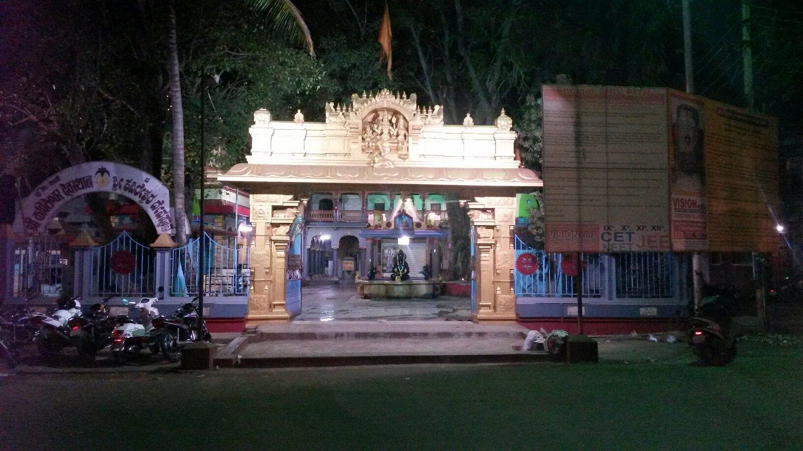

Belgaum Fort
Belgaum Fort is in the city of Belgaum, in the Belgaum district,
in Karnataka state, India. It was begun by Jaya Raya, also called Bichi Raja, an ally
of the Ratta Dynasty, in the year 1204. It has undergone several renovations over the centuries under
dynastic rulers of the region
Learn More

Kapileshwara Temple
Kapileshwar Temple is a holy shrine in Belgaum City, dedicated to Lord Shiva and is considered as the
southern Kashi. The temple is located beside the Shahpur Flyover which connects the central city of
Belgaum to Shahpur.
Learn More
Kamal Basti
The Kamal Basadi was built by Birchiraja, also called Jaya Raya, an officer in the court of Kartavirya IV of the Ratta dynasty
in c. 1204 CE under the guidance of Jain monk Subhachandrabhattarakadeva. According to two stone tablets, now placed inside
the Royal Asiatic Society branch in Mumbai, an inscription dating back to 1205 CE states the temple was constructed by the architect Kartaviryadeva
and yuvrajakumara mallikarjunadeva.
Learn More
Go river rafting
Experience the thrill of river rafting in Belgaum, where the vibrant waters of the Kali and Mahadayi rivers promise an adrenaline-filled adventure.
Surrounded by lush greenery and scenic landscapes, the rafting trails cater to both beginners and seasoned adventurers. With expert guides ensuring safety,
it's the perfect way to enjoy the rush of the rapids while soaking in the natural beauty of Karnataka. Don't miss this unforgettable outdoor escapade!
Learn More
Ramakrishnanaparamahansa Ashram
amakrishnanaparamahansa Ashram is a serene spiritual retreat located in Belgaum, Karnataka. Dedicated to the teachings and philosophy of Swami Ramakrishna
Paramahamsa, the ashram offers a peaceful environment for meditation, spiritual growth, and reflection. The ashram is a center for learning and devotion,
where visitors can experience a deep sense of tranquility and connect with their inner selves. It also serves as a hub for various cultural and religious
activities, drawing people seeking spiritual enlightenment and solace.
Learn More
Explore ancient structures
The Kamal Basadi was built by Birchiraja, also called Jaya Raya, an officer in the court of Kartavirya IV of the Ratta dynasty
in c. 1204 CE under the guidance of Jain monk Subhachandrabhattarakadeva. According to two stone tablets, now placed inside
the Royal Asiatic Society branch in Mumbai, an inscription dating back to 1205 CE states the temple was constructed by the architect Kartaviryadeva
and yuvrajakumara mallikarjunadeva.
Learn More